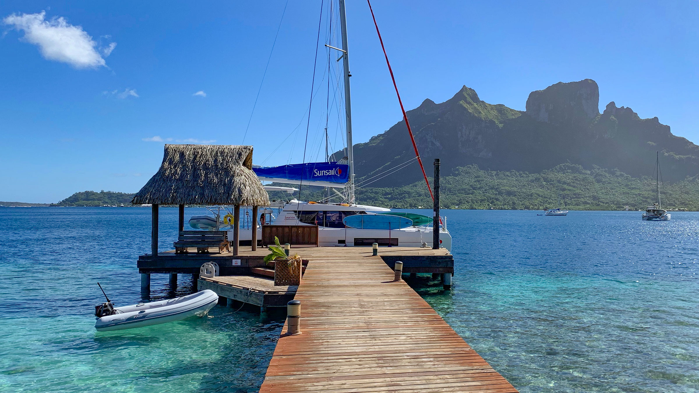

Plan Your Trip
Build a smooth Taniti itinerary by choosing a base area, transportation plan, and a mix of beach, rainforest, and volcano activities—then confirm holiday closures and local rules.

Suggested 5–7 Day Itinerary
- Day 1: Arrive, settle in Taniti City, sunset at Yellow Leaf Bay
- Day 2: Beach day + local museum
- Day 3: Rainforest hike or zip-lining
- Day 4: Volcano visit (guided) + scenic interior drive
- Day 5: Snorkeling or fishing tour + Merriton Landing nightlife
- Optional Days: Island bus/boat tour, art galleries, bowling/arcade, helicopter ride
Choose Your Base
- Taniti City: architecture + beaches + walkability
- Merriton Landing: entertainment hub + easy on-foot exploring
- Outside hubs: for those desiring quieter stays, but plan for rental car/private bus
Island Views

Frequently Requested Information
Power outlets
NEMA 4-15
120 volts
120 volts
Alcohol restriction hours
Alcohol cannot be served or sold between midnight and 9:00 a.m.
Drinking age
Drinking age is 18
Language
Many younger Tanitians speak fluent English; very little English is spoken in rural areas, especially by older residents.
Health care
One hospital and several clinics. The hospital has many multilingual employees.
Holidays
Taniti has many national holidays and attractions/restaurants may close—plan accordingly.
Currency
Taniti uses the U.S. dollar Many businesses also accept euros or yen.
Payments & exchange
Several banks facilitate currency exchange, and many businesses accept major credit cards.
Security reminder
Violent crime is very rare, but pickpocketing and petty theft have increased as tourism grows. Keep valuables secure in crowded areas.